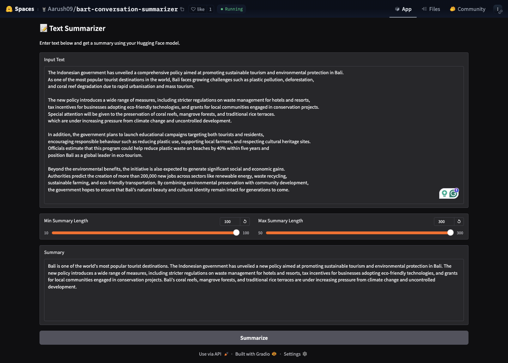

Integrated Whisper ASR, Pyannote diarization, and a fine-tuned BART model for real-time audio processing, speaker attribution, and multi-format support.


Utilised SQL queries to extract data from the database for data cleaning and exploration. Developed a Dashboard to summarise the insights derived from the queries.

Fine-tuned BART-large model on 14.7K conversations, achieving ROUGE-1: 40.5, ROUGE-2: 20.2.

Conducted technical and risk analysis on stocks of leading tech companies (Amazon, Apple, Google, Microsoft) using historical market data.

This is a Linear Regression project, to predict the percentage of students, based on the number of study hours using phyton.